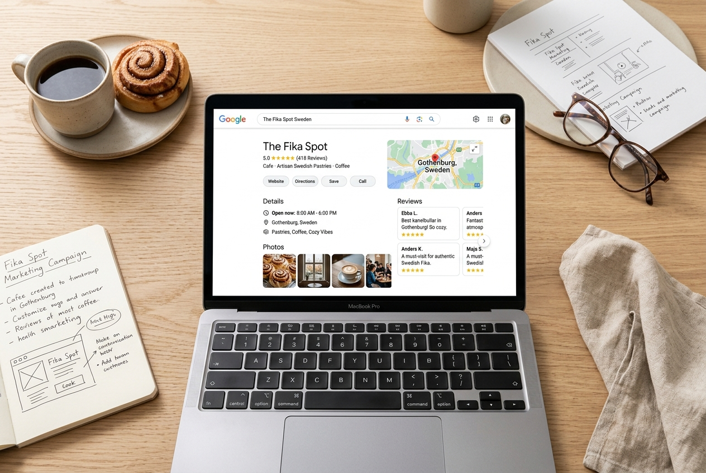

Kreativitet möter strategi i modern digital marknadsföring
Jag studerar Digital Marketing på IHM Business School i Göteborg och brinner för den kreativa sidan av marknadsföring – att fånga målgrupper med stark visuell storytelling, engagerande innehåll och kampanjer som skapar verkligt värde.
Kreativ marknadsförare med känsla för form och målgrupp
Jag utbildar mig till Digital Marketing Specialist på IHM Business School i Göteborg (2026–2028). För mig är marknadsföring som allra mest spännande när man hittar den perfekta balansen mellan kreativitet och analys – att skapa visuella koncept och texter som berör, samtidigt som det finns en tydlig strategi i botten.
Innan mina studier arbetade jag i butik med B2B och kundrelationer. Den erfarenheten har gett mig en stark förståelse för kundens behov, köpresor och vad som bygger genuint förtroende. Nu använder jag den kunskapen för att skapa digitala upplevelser som engagerar och konverterar.
Mina kompetenser
Mitt primära fokus och specialistområde under min utbildning på IHM Business School:

Marknadsföring
Digital marknadsföring med tyngdpunkt på den kreativa processen – från koncept och visuell kommunikation till storytelling och kampanjer som fångar målgruppens intresse och bygger starka varumärken.
Utvalda projekt
Här samlar jag projekt och praktiska uppgifter från min utbildning på IHM Business School:
Projekt på gång
Mina projekt och kreativa case läggs upp här löpande under utbildningens gång. Kom gärna tillbaka snart eller hör av dig om du vill veta mer om vad jag arbetar med just nu!
Vill du samarbeta eller veta mer?
Jag är alltid nyfiken på nya spännande projekt, nätverkande och framtida LIA-praktikplatser inom kreativ digital marknadsföring. Tveka inte att höra av dig!